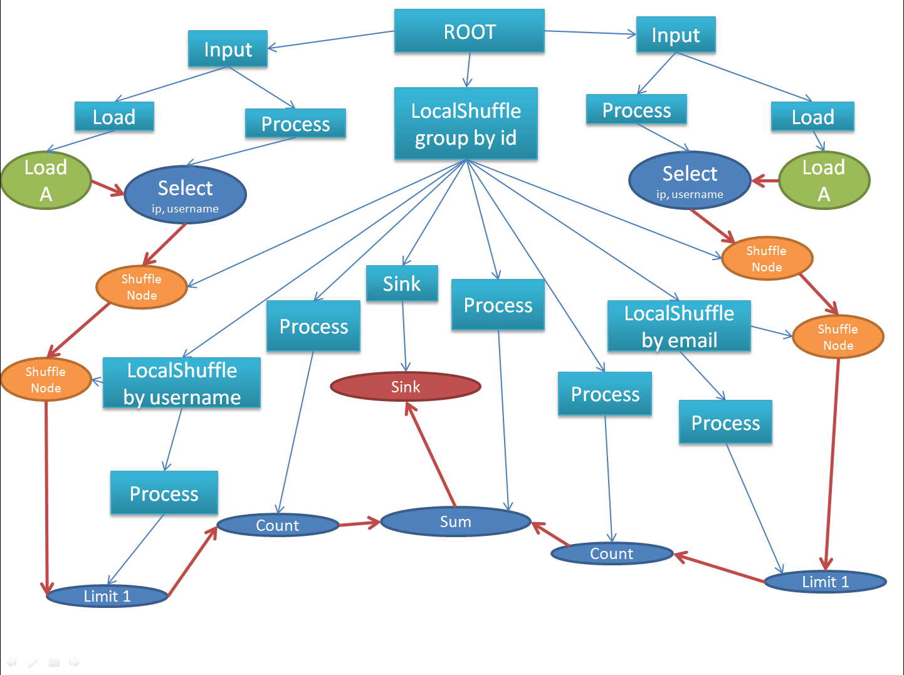
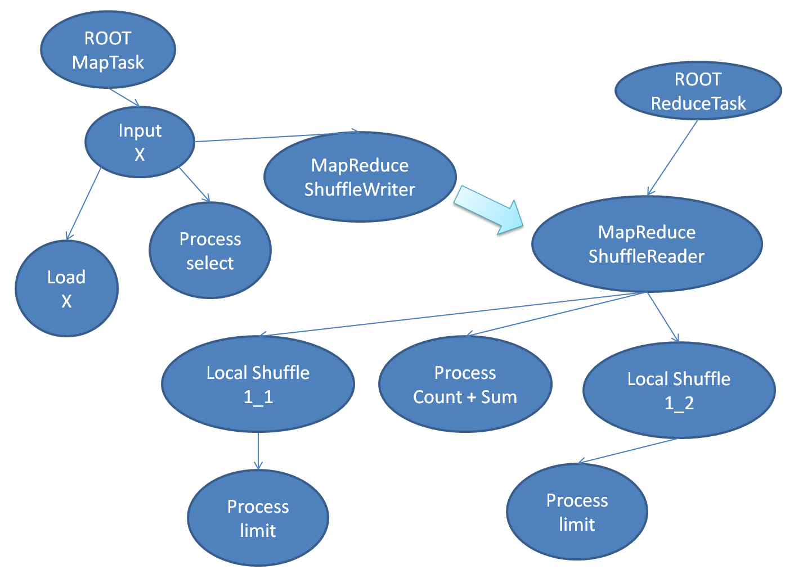

算子执行框架¶
本章描述Flume-Runtime如何把各个用户算子串联在一起, 相关代码在 flume/runtime 目录下. 关于算子及其逻辑组织关系, 参见 Flume-Core
基本类型¶
Executor 是驱动用户算子的最小执行单位. 其接口定义如下:
class Executor { public: virtual ~Executor() {} // 初始化方法, 传入Executor执行所需要的数据依赖 virtual void Setup(const std::map<std::string, Source*>& sources) = 0; // 为其他Executor提供数据依赖. virtual Source* GetSource(const std::string& id, unsigned scope_level) = 0; // 开始执行一个新的分组. // 进入分组后, 继续的BeginGroup调用代表执行流成进入一个嵌套的分组. // 每个BeginGroup都会有一次FinishGroup调用和其对应 virtual void BeginGroup(const toft::StringPiece& key) = 0; // 完成执行一个分组. // FinishGroup的调用不代表该分组执行完成, 而是通知Executor可以开始真正的执行逻辑. virtual void FinishGroup() = 0; };
在Executor接口中出现的 Source 代表数据源, 其接口定义如下:
// Source类的接口采用Observer设计模式. class Source { public: typedef toft::Closure<void (void*)> ObjectCallback; // NOLINT typedef toft::Closure<void (const toft::StringPiece&, void*)> BinaryCallback; typedef toft::Closure<void (core::Iterator*)> IteratorCallback; typedef toft::Closure<void ()> DoneCallback; // 每个Handle代表一个数据接收者, 数据发送以组为周期. class Handle { public: virtual ~Handle() {} // 该接口用来通知数据提供者, 当前发送的一组数据不再被需要. virtual void Done() = 0; }; // 代表需要可迭代数据的接收者. class IteratorHandle : public Handle { public: // 回退到接收流式数据 virtual bool Fallback(ObjectCallback* consumer, DoneCallback* eof) = 0; }; public: virtual ~Source() {} // 注册一个需要内存对象的接收者. // consumer用来发送数据, eof用来表示一组数据处理结束. virtual Handle* RequireObject(ObjectCallback* consumer, DoneCallback* eof) = 0; // 注册一个需要序列化后对象的接收. // consumer用来发送数据, eof用来表示一组数据处理结束. virtual Handle* RequireBinary(BinaryCallback* consumer, DoneCallback* eof) = 0; // 注册一个需要迭代访问一组数据的接收者. // callback在整组数据都就绪后被调用. virtual IteratorHandle* RequireIterator(IteratorCallback* callback) = 0; };
串联执行模型¶
在 Processor 一节中, 我们给出了个算子串联的例子. 对于这种模型, 下图展示了Executor如何处理这种情形:

假设这些Processor都是以流式处理的方式串联在一起, 如果在Processor A中产生了一条记录, Executor A会将这条记录依次发送给下游的处理节点. 调用关系如下:
- ProcessorA->Process
- EmitterA->Emit
- ExecutorB->Receive
- ProcessorB->Process
- EmitterB->Emit
- ExecutorD->Receive
- ...
- ExecutorC->Receive
- ProcessorC->Process
- EmitterC->Emit
- ...
参见
flume/runtime/common/sub_executor_manager.h 负责在各个Executor之间建立数据依赖关系
嵌套执行模型¶
在 Group/Scope 一节中, 我们展示了Flume如何表示嵌套的分组及嵌套分组中的计算逻辑. 下图展示了Executor如何执行这类带有嵌套'子图'的逻辑计划:
{kind=link}
对于蓝色的ShuffleExecutor来说, 它有两个子Executor, 一个是ProcessorExecutor, 用来执行求和算子, 另一个是嵌套的ShuffleExecutor, 用来执行嵌套分组. 和一般的Executor一样, ShuffleExecutor从外部Source获得数据, 当读完全部一组数据后, ShuffleExecutor会依据用户提供的KeyReader将所有的数据分组, 并依次把每一组数据交给子Executor处理. 对于某一组数据而言, ShuffleExecutor的调用逻辑如下:
- FatherExecutor->Receive
- ...
- FatherExecutor->ReceiveDone
- FatherExecutor->GroupDatas
- ChildExecutor1->BeginGroup first-day
- ...
- ChildExecutorN->Begingroup first-day
- ChildExecutorN->FinishGroup
- ...
- ChildExecutor1->FinishGroup
- FatherSource->DispatchData
- ...
- FatherSource->NotifyDone
- ChildExecutor1->BeginGroup second-day
- ...
从前面的定义中我们看到, Executor接口中有BeginGroup和FinishGroup两个方法, 该方法由其父Executor调用, 用以控制每组数据的执行流程. BeginGroup用来通知执行流进入到一个新的Scope, 所有上游数据依赖都开始处理该Scope上的一个分组. FinishGroup通知执行流即将退出对应的Scope, 每个Executor都只处理某个Scope上的数据, 当相应Scope上的FinishGroup被调用时, 以为着所有下游数据依赖都开始处理该组数据, 这是Executor就开始准备接收上游数据, 并将处理后的数据发往下游.
按照flume-core的接口定义, 每个算子不仅需要拿到其所在Scope的分组信息, 还需要拿到所有包含Scope的分组信息, 故父Executor还需向子Executor透传高层Scope的分组信息. 调用关系如下:
- FatherExecutor->BeginGroup first-week
- ChildExecutor1->BeginGroup first-week
- ...
- ChildExecutorN->BeginGroup first-week
- FatherExecutor->FinishGroup
- FatherExecutor->Receive
- FatherExecutor->ReceiveDone
- FatherExecutor->Run
- FatherExecutor->FinishGroup
- ChildExecutorN->FinishGroup
- ...
- ChildExecutor1->FinishGroup
从上面的讲述中, 我们可以看到所有的Executor按照父子关系组织成一棵树, 同时所有的数据源被串联成Dag. 关于这一模型, 也可参见 优化器框架
示例场景¶
假设我们在分布式数据库中存储了两组日志, 分别是网站A和网站B的登录日志. 网站A中以用户名为ID进行登录, 网站B以邮箱地址为ID进行登录, 两组日志总都有IP信息. 我们希望汇总一下每个IP有多少个独立的登录ID. 下面的SQL可以完成该统计:
select ip, count(distinct A.username) + count(distinct B.email)
from site_a_login as A, site_b_login as B
where A.ip = B.ip
group by ip
这个SQL可以翻译成下图所示的逻辑执行计划:

上图中, 绿色节点是LOAD_NODE, 蓝色节点是PROCESS_NODE, 黄色节点是SHUFFLE_NODE, 红色节点是SINK_NODE. 下面的图片反映了如何在本地执行该计划:
{kind=link}
上图中方形节点代表Executor, 蓝线标识了父子关系, 圆形节点代表数据源/用户算子, 红线标识数据流. 下面是远程执行时的Executor树:
{kind=link}
上图省略了部分节点, 只画出了Executor之间的关系.